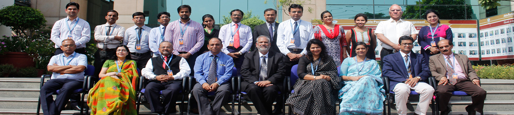

Call Us On: 180011334 | Email: admissions@asiapacific.edu




Meet The Faculty
Asia Pacific Institute of Management
Faculty Profile
INDIVISUAL PROFILE

Dr. S.P. Chauhan
Professor
Area : Organizational Behaviour and Human Resource Management.
Experience: 21 Years
M.A., Ph.D. (Psychology)

Contact Details
spchauhan@asiapacific.edu
+91-1234567890
Dr. S.P. Chauhan is a Professor in the area of Organizational Behaviour and Human Resource Management. He has received his Doctorate in Psychology from Panjab University, Chandigarh. Before joining Asia Pacific Institute of Management, Dr. Chauhan was associated with some of the top business schools in Delhi like FORE School of Management, Shri Ram Centre for IR & HR, New Delhi, as a Professor of OB & HR. Earlier he was also associated with Centre for Management Development (CMD), Modinagar as a Director, and as a Director & Professor with Sri Sharada Institute of Indian Management - Research, New Delhi.
He has authored a book "Effective Leadership: Strategies for Better Results" and published 29 papers and articles in the well known journals. Dr. Chauhan has conducted MDPs for various organizations such as NTPC, NHPC, ONGC, EIL, NSPCL, BEL, NALCO, IOCL, NBCC, Petronet LNG Ltd, Power Grid Corporation, NDPL, Maruti Udyog Ltd., BPR&D, Whirlpool, DCM Engineering, etc.
Dr. Chauhan's specific areas of interest are: Personality Profiling, Professional Obsolescence, Leadership, Team Building and Group Dynamics, Emotional Intelligence, Managing Change, Developing Positive Attitude, HR Practices etc.
1. "Optimism vs Pessimism Revisited", Indian Journal of Training & Development (IJTD), Vol. XXII, No. 3, July-Sept. 1993.
2. "Managerial Obsolescence - Issues and Strategies", MDI Management Journal, Vol. 9, No. 1, January 1996.
3. "Managerial Burnout: A Study of Managers from Government, Public and Private Sectors", (jointly with Vidhu Mohan and Daisy Chauhan), Management and Change, Vol.3, No.1, January-June, 1999, pp. 129-150.
4. "Effects of Locus of Control and Motives on Stress and Effectiveness: A Study of Women Managers", (Jointly with Vidhu Mohan and Daisy Chauhan), Vision: The Journal of Business Perspective, Vol. 4, No.1, January-June, 2000, pp. 41-47.
5. "Moderating Effect of Locus of Control on Organisational Role Stress", (Jointly with Vidhu Mohan and Daisy Chauhan), Paradigm , Vol.4, No.1, January-June, 2000.
6. "A Pre-Post Test Design to Study the Effect of Training on perceived Obsolescence", (Jointly with Vidhu Mohan), Research Methods, UBS, Panjab Univ., Chandigarh .
7. "Are you aware how your personality type affects your behaviour" (Jointly with Daisy Chauhan), Global Business Review, July-December, 2001.
8. "Are Managers Becoming Obsolescents? An Empirical Study", (jointly with Vidhu Mohan and Daisy Chauhan), Indian Journal of Industrial Relations, Vol. 36, No. 1, July 2001.
9. "Work Motivation of Managers in a Mixed Economy: A Comparative Study" (Jointly with Daisy Chauhan), Management and Change, Vol. 5, No. 2 winter, July-Dec. 2001.
10. Relevance of Corporate Governance in a Competitive Environment, (Jointly with Daisy Chauhan), in Wining Globally: Competitive Strategies, Indore Management Association, Excel Books, New Delhi (2002).
11. Ethical Dilemmas Faced by Managers: Some Real Life Cases (Jointly with Daisy Chauhan), Indian Journal of Industrial Relations, Vol. 37, No. 3, Jan. 2002.
12. Future Directions for HRD : Aligning the HR Function to Organisational Goals (Jointly with Daisy Chauhan), Management and Change, Vol. 6, No. 2 winter, July-Dec. 2002.
13. Gaining Competitive Edge : The People-Oriented Approach (Jointly with Daisy Chauhan), Indian Journal of Industrial Relations, Vol. 38, No. 2, October, 2002.
14. Influence of Orientation on Managerial Effectiveness: A Study of Effect of LOC on Role Effectiveness, (Jointly with Daisy Chauhan), Productivity, Vol. 44, No. 3, October-Dec., 2003.
15. Professional Obsolescence: Causes and Preventive Measures (Jointly with Daisy Chauhan), Indian Journal of Industrial Relations, Vol. 39, No. 3, Jan., 2004.
16. Stress: Can it be a Motivating Force for Realizing Your Potential? (Jointly with Daisy Chauhan), Indian Journal of Industrial Relations, Vol. 40, No. 3, Jan., 2005.
17. Overcoming Managerial Obsolescence: The Key to Human Development, (Jointly with Daisy Chauhan), in Creating Value through People, Excel Books, New Delhi (2005), pp. 321-338.
18. Personality at Workplace (Jointly with Daisy Chauhan), Indian Journal of Industrial Relations, Vol. 41, No. 3, Jan., 2006.
19. "Professional Obsolescence", Annual Handbook of Human Resource Initiatives 2007, (Ed.) Mahaveer Jain and Partha Sarathi, pub. by Initiatives and Interventions, Delhi., pp.141-158, 2007
20. A Proactive Approach to Managing Stress (jointly with Daisy Chauhan), in Prabandhan: CMD Journal of Management, Vol. 1, No. 1, Jan-June, 2007.
21. Effect of Personality on Problem Solving and Decision Making, (jointly with Daisy Chauhan), Productivity, Vol.48, No.2, April-June, 2007.
22. Motivation: The Key to Performance Improvement, (Jointly with Daisy Chauhan), Management & Change, Vol.11, No.2, July-December, 2007.
23. Emotional Intelligence: Does it influence Decision Making and Role Efficacy?, (jointly with Daisy Chauhan), Indian Journal of Industrial Relations, Vol. 43, No. 2, October, 2007.
24. Human Obsolescence: A Wake-up Call to Avert a Crisis, (jointly with Daisy Chauhan), Global Business Review, Vol.9, No.1, January-June, 2008.
25. Are you on the Verge of Obsolescence, Indian Journal of Industrial Relations,
(jointly with Daisy Chauhan), Vol. 45, No. 2, April, 2009.
26. Case: Universal Ltd., (jointly with Daisy Chauhan), Organisational Behaviour and Human Resource Management, (Eds. Mirza Saiyadain, J.S. Sodhi and Rama Joshi) McGraw Hill, 2009.
27. Case: Tiger Toys., (jointly with Daisy Chauhan), Organisational Behaviour and Human Resource Management, (Eds. Mirza Saiyadain, J.S. Sodhi and Rama Joshi) McGraw Hill, 2009.
28. "Professional Obsolescence in Relation to Job Involvement and Burnout", (jointly with Vidhu Mohan) Business Psychology, (Ed.) Novrattan Sharma & Amrita Yadava, Global Vision Publishing House, New Delhi, 2010.
29. Working Paper: Organizational Culture in China: An Overview (unpublished)
Dr. S.P. Chauhan is a Professor in the area of Organizational Behaviour and Human Resource Management. He has received his Doctorate in Psychology from Panjab University, Chandigarh. Before joining Asia Pacific Institute of Management, Dr. Chauhan was associated with some of the top business schools in Delhi like FORE School of Management, Shri Ram Centre for IR & HR, New Delhi, as a Professor of OB & HR. Earlier he was also associated with Centre for Management Development (CMD), Modinagar as a Director, and as a Director & Professor with Sri Sharada Institute of Indian Management - Research, New Delhi.
He has authored a book "Effective Leadership: Strategies for Better Results" and published 29 papers and articles in the well known journals. Dr. Chauhan has conducted MDPs for various organizations such as NTPC, NHPC, ONGC, EIL, NSPCL, BEL, NALCO, IOCL, NBCC, Petronet LNG Ltd, Power Grid Corporation, NDPL, Maruti Udyog Ltd., BPR&D, Whirlpool, DCM Engineering, etc.
Dr. Chauhan's specific areas of interest are: Personality Profiling, Professional Obsolescence, Leadership, Team Building and Group Dynamics, Emotional Intelligence, Managing Change, Developing Positive Attitude, HR Practices etc.
1. Employee Satisfaction Survey for NTPC
2. Impact of Change in NDPL, New Delhi
3. Industrial Scenario and IR Climate in Udham Singh Nagar and Haridwar districts of Uttaranchal State.
4. Conducted a study (funded by WHO) on Quality of Work Life of Nurses in three states (West Bengal, Himachal Pradesh, and Maharashtra).
5. Study of HR Policies and Practices in NTPC.
6. Study of Performance Indicators of six Delhi Police Stations of Delhi (sponsored by Bureau of Police Research Department).
7. HR Policies and Practices for NHPC.
8. Organizational Climate Survey for ONGC.
Conducted MDPs for various organizations such as NTPC, NHPC, ONGC, EIL, NSPCL, BEL, NALCO, IOCL, NBCC, Petronet LNG Ltd, Power Grid Corporation, NDPL, Maruti Udyog Ltd., BPR&D, Whirlpool, DCM Engineering, etc.
1. "Optimism vs Pessimism Revisited", Indian Journal of Training & Development (IJTD), Vol. XXII, No. 3, July-Sept. 1993.
2. "Managerial Obsolescence - Issues and Strategies", MDI Management Journal, Vol. 9, No. 1, January 1996.
3. "Managerial Burnout: A Study of Managers from Government, Public and Private Sectors", (jointly with Vidhu Mohan and Daisy Chauhan), Management and Change, Vol.3, No.1, January-June, 1999, pp. 129-150.
4. "Effects of Locus of Control and Motives on Stress and Effectiveness: A Study of Women Managers", (Jointly with Vidhu Mohan and Daisy Chauhan), Vision: The Journal of Business Perspective, Vol. 4, No.1, January-June, 2000, pp. 41-47.
5. "Moderating Effect of Locus of Control on Organisational Role Stress", (Jointly with Vidhu Mohan and Daisy Chauhan), Paradigm , Vol.4, No.1, January-June, 2000.
6. "A Pre-Post Test Design to Study the Effect of Training on perceived Obsolescence", (Jointly with Vidhu Mohan), Research Methods, UBS, Panjab Univ., Chandigarh .
7. "Are you aware how your personality type affects your behaviour" (Jointly with Daisy Chauhan), Global Business Review, July-December, 2001.
8. "Are Managers Becoming Obsolescents? An Empirical Study", (jointly with Vidhu Mohan and Daisy Chauhan), Indian Journal of Industrial Relations, Vol. 36, No. 1, July 2001.
9. "Work Motivation of Managers in a Mixed Economy: A Comparative Study" (Jointly with Daisy Chauhan), Management and Change, Vol. 5, No. 2 winter, July-Dec. 2001.
10. Relevance of Corporate Governance in a Competitive Environment, (Jointly with Daisy Chauhan), in Wining Globally: Competitive Strategies, Indore Management Association, Excel Books, New Delhi (2002).
11. Ethical Dilemmas Faced by Managers: Some Real Life Cases (Jointly with Daisy Chauhan), Indian Journal of Industrial Relations, Vol. 37, No. 3, Jan. 2002.
12. Future Directions for HRD : Aligning the HR Function to Organisational Goals (Jointly with Daisy Chauhan), Management and Change, Vol. 6, No. 2 winter, July-Dec. 2002.
13. Gaining Competitive Edge : The People-Oriented Approach (Jointly with Daisy Chauhan), Indian Journal of Industrial Relations, Vol. 38, No. 2, October, 2002.
14. Influence of Orientation on Managerial Effectiveness: A Study of Effect of LOC on Role Effectiveness, (Jointly with Daisy Chauhan), Productivity, Vol. 44, No. 3, October-Dec., 2003.
15. Professional Obsolescence: Causes and Preventive Measures (Jointly with Daisy Chauhan), Indian Journal of Industrial Relations, Vol. 39, No. 3, Jan., 2004.
16. Stress: Can it be a Motivating Force for Realizing Your Potential? (Jointly with Daisy Chauhan), Indian Journal of Industrial Relations, Vol. 40, No. 3, Jan., 2005.
17. Overcoming Managerial Obsolescence: The Key to Human Development, (Jointly with Daisy Chauhan), in Creating Value through People, Excel Books, New Delhi (2005), pp. 321-338.
18. Personality at Workplace (Jointly with Daisy Chauhan), Indian Journal of Industrial Relations, Vol. 41, No. 3, Jan., 2006.
19. "Professional Obsolescence", Annual Handbook of Human Resource Initiatives 2007, (Ed.) Mahaveer Jain and Partha Sarathi, pub. by Initiatives and Interventions, Delhi., pp.141-158, 2007
20. A Proactive Approach to Managing Stress (jointly with Daisy Chauhan), in Prabandhan: CMD Journal of Management, Vol. 1, No. 1, Jan-June, 2007.
21. Effect of Personality on Problem Solving and Decision Making, (jointly with Daisy Chauhan), Productivity, Vol.48, No.2, April-June, 2007.
22. Motivation: The Key to Performance Improvement, (Jointly with Daisy Chauhan), Management & Change, Vol.11, No.2, July-December, 2007.
23. Emotional Intelligence: Does it influence Decision Making and Role Efficacy?, (jointly with Daisy Chauhan), Indian Journal of Industrial Relations, Vol. 43, No. 2, October, 2007.
24. Human Obsolescence: A Wake-up Call to Avert a Crisis, (jointly with Daisy Chauhan), Global Business Review, Vol.9, No.1, January-June, 2008.
25. Are you on the Verge of Obsolescence, Indian Journal of Industrial Relations,
(jointly with Daisy Chauhan), Vol. 45, No. 2, April, 2009.
26. Case: Universal Ltd., (jointly with Daisy Chauhan), Organisational Behaviour and Human Resource Management, (Eds. Mirza Saiyadain, J.S. Sodhi and Rama Joshi) McGraw Hill, 2009.
27. Case: Tiger Toys., (jointly with Daisy Chauhan), Organisational Behaviour and Human Resource Management, (Eds. Mirza Saiyadain, J.S. Sodhi and Rama Joshi) McGraw Hill, 2009.
28. "Professional Obsolescence in Relation to Job Involvement and Burnout", (jointly with Vidhu Mohan) Business Psychology, (Ed.) Novrattan Sharma & Amrita Yadava, Global Vision Publishing House, New Delhi, 2010.
29. Working Paper: Organizational Culture in China: An Overview (unpublished)

Asia-Pacific Institute of Management
is a top ranked Business School of India.
The latest Business Today - MDRA survey
ranked the Institute "6th" amongst private
B-Schools in North India (9th amongst all
B-Schools in North India).
Accreditions:


- ACADEMIC
PROGRAMMES - PGDM
- PGDM Marketing
- PGDM IB
- PGDM BFS
- Executive PGDM
- IBM SPSS
- Mandatory Disclosures
- NIRF 2017
- ADMISSION
- PGDM
- PGDM Marketing
- PGDM IB
- PGDM BFS
- CFERM
REQUEST A CALL BACK


© Asia Pacific Institute of Management. All rights reserved.